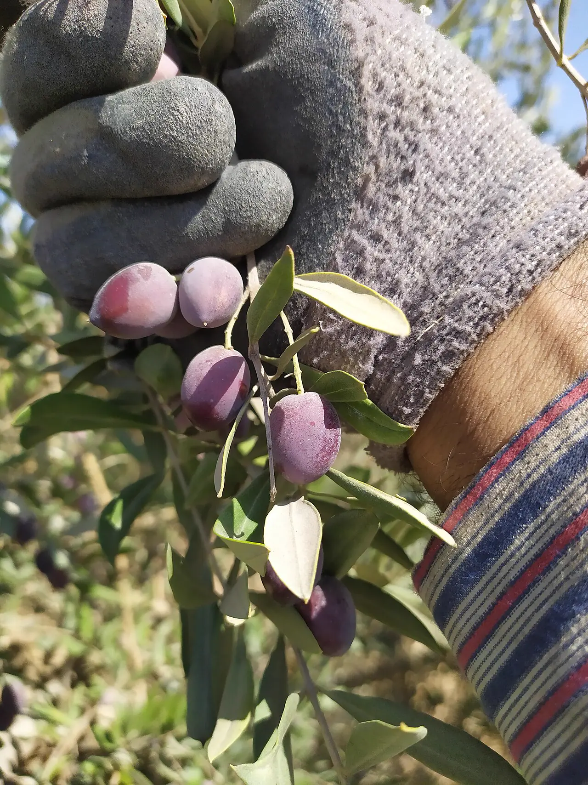

‘He irrigated the tree with his blood’: olive farmers brace for a violent harvest
Nablus — The National visits a Nablus-area grove where a father of four was killed by settlers on 7 October, and a family in Usarin still nursing its wounds.


In the hills around Nablus, a 59-year-old farmer showed The National the olive tree where his cousin, a 44-year-old father of four, bled to death after settlers attacked the family’s grove on 7 October. He said the attackers fired at them, beat them with metal and wooden objects and threw stones; eight people were hurt, two by gunfire.
He irrigated the tree with his blood.
Farther south in the village of Usarin, a 63-year-old woman described being beaten as she ran toward relatives ambushed by settlers in the grove beside their home. One of her sons was still in intensive care in Nablus with a severe brain injury, the paper reported.
The National says the trees are full this year after a poor 2025 crop, that at least two Palestinians have been killed by settlers since farmers began returning to their groves in late September, and that both attacks it documented took place in Areas A and B, where the Palestinian Authority has full or partial control.